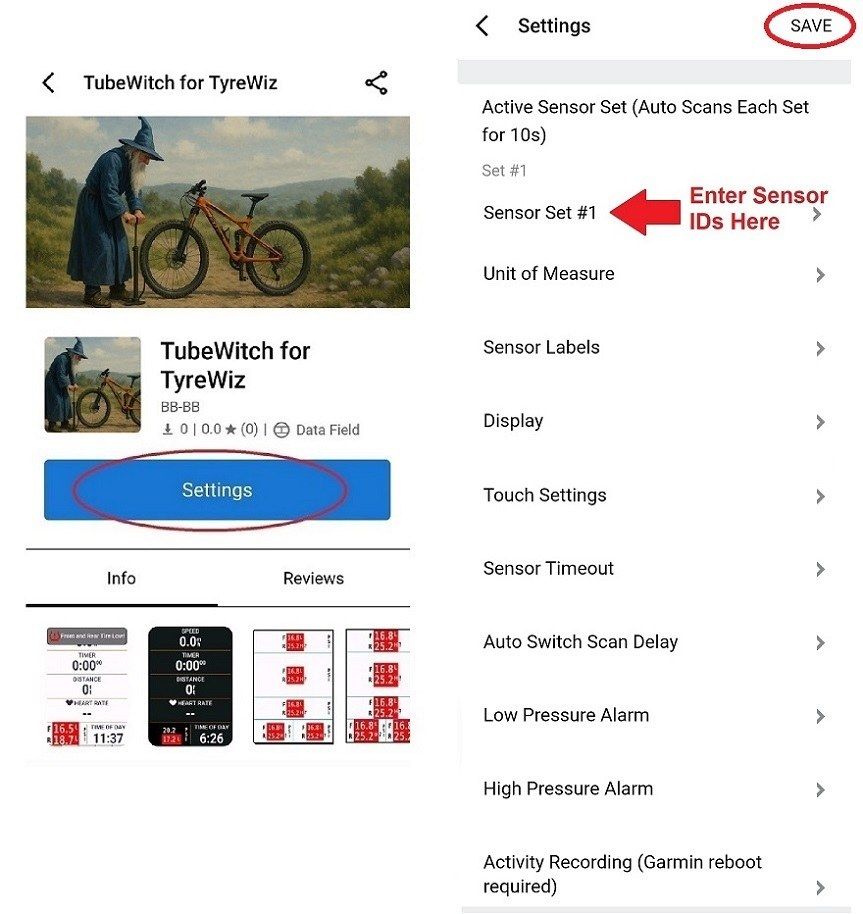

Single bike
Keep it manual
For a single bike or wheelset, one active set with Auto mode off is usually sufficient.
Settings guide
This page is meant to cut through the long list of options. Start with Sensor IDs and Active Sensor Set. Then confirm that TubeWitch connects and shows live pressures before tuning alerts. Most other controls are optional, and the defaults should work well for most riders.

Single bike
For a single bike or wheelset, one active set with Auto mode off is usually sufficient.
Multiple bikes
Clear set names are easier to distinguish at a glance when using Auto scanning or touch switching.
Small screens
IDs, set names, and too many decimal places can crowd smaller layouts. Readability matters more than detail.
After changes
Unit changes and some recording changes are more reliable after a Garmin reboot.
Choose which Sensor Set is shown in the Data Field. Manually select the active set or use Auto to scan configured sets every 10s.
Name each bike or wheelset clearly. This name is also shown in Connect IQ stats.
Choose Front, Rear, or both. Use this to avoid empty slots in mixed setups.
Enter only the numeric part. IDs are printed on the sensor or shown in the SRAM app as AGG#####.
Notes are visible only in settings and help label tire or wheel details for later reference.
Choose PSI, kPa, or BAR for pressure display in the data field and related stats.
Extra precision can make small layouts harder to scan. Limit precision to what remains readable while moving. Auto is recommended.
Turns the unit label on or off in the field display.
TubeWitch Mode is default. Compatibility Mode uses dynamic sizing and positioning for broader device coverage.
Auto, Vertical, or Horizontal layout behavior.
Auto, Light, or Dark styling depending on layout and page contrast.
Displays F and R labels in the data field.
Useful during setup and multi-bike use, but these can crowd very small layouts.
Controls the separator style used on horizontal layouts.
Enables Touch to Switch Sensor Sets, Touch to Disable TubeWitch, and Touch to Rescan after timeout.
Default 15 Minutes - During an activity, TubeWitch times out if no sensors are found. No timeout if an activity is not started.
Default 60 Seconds - If both sensors disconnect while Active Sensor Set = Auto, TubeWitch waits for this delay before scanning other sets [10s each].
The defaults should work well for most riders. If alerts need to trigger sooner, later, or stay active longer before resetting, this is the place to tune that behavior.
Enable or disable alarm tone output.
Enable popup alerts on newer supported devices.
Enable vibration alerts on supported watches.
Set how long pressure must remain high or low before the alert triggers.
Set how long pressure must be back in range before the alert state clears.
Select the tone used when audible alerts are enabled.
Color change remains the fastest visual warning state and is always active when the condition exists.
Garmin reboot is recommended after recording-setting changes.
For post-ride review, the most useful additions are often set number and alarm status alongside raw pressure.
Multi-Sensor Compatibility Mode is the fallback when sensors cannot connect cleanly or are not assigned to front and rear in the SRAM app.
After a Garmin Edge power cycle, or after starting a new activity on a watch, Auto Switch will scan each configured sensor set for 10 seconds until it finds one that is active. Even when all 5 bikes or wheelsets are configured, it will typically find the correct set within a minute.
When starting a ride, TubeWitch can lock onto any of the 5 configured sensor sets if those sensors are active and nearby. Once locked on, it will stay on that set until those sensors are out of range and TubeWitch shows "?", indicating a lost connection. It then waits for the Auto Switch Scan Delay, default 60 seconds, and resumes scanning all configured sensor sets for 10 seconds each. After riding away from the other nearby sensors, it should switch to the bike or wheelset actually being ridden within a few minutes.
If a Garmin activity is started but sensors are not being used, the data field keeps searching until the timeout, default 15 minutes. Then it shows "Sensors Not Found" and stops scanning to save battery. Tap the screen or Stop/Resume the activity to restart the scan.
If a Garmin activity is started and sensors were found but the signals drop, the field shows the last received pressure with a "?" to indicate stale data. If the signal stays missing long enough, the sensor times out after the default 15 minutes. It then shows an "X" next to the pressure, meaning the radio is off.
If Auto Switch mode is active and both sensors become stale, TubeWitch starts scanning other configured sensor sets before showing an "X". It will still time out after 15 minutes if no sensors are found.